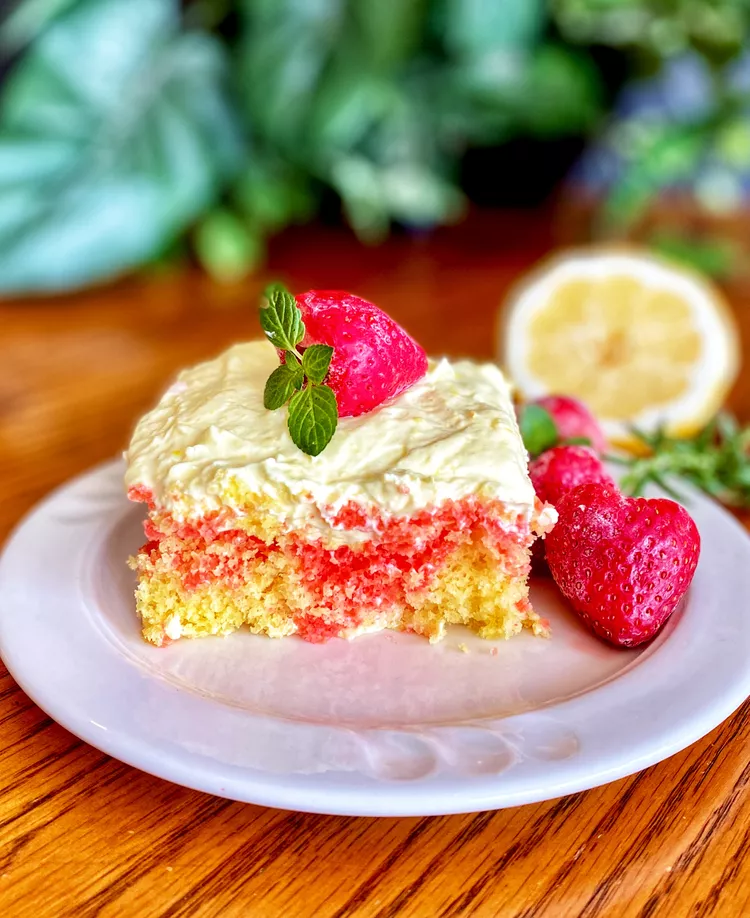

Home
Strawberry Lemonade Poke Cake

Description
This Strawberry Lemonade Poke Cake is a refreshing dessert perfect for
summer gatherings. The cake is infused with lemonade and topped with a
luscious strawberry glaze, making it a delightful treat for any occasion.
Ingredients
- 1 box lemon cake mix
- 1 cup water
- 1/3 cup vegetable oil
- 3 large eggs
- 1 cup lemonade concentrate, thawed
- 1 cup fresh strawberries, sliced
- 1/2 cup powdered sugar
- 1/4 cup milk
- Whipped cream for topping (optional)
Instructions
- Preheat the oven to 350°F (175°C). Grease and flour a 9x13 inch baking dish.
- In a large bowl, combine the lemon cake mix, water, vegetable oil, and eggs. Mix until well combined.
- Pour the batter into the prepared baking dish and bake for 25-30 minutes or until a toothpick inserted in the center comes out clean.
- While the cake is baking, prepare the lemonade glaze by mixing the lemonade concentrate with powdered sugar and milk until smooth.
- Once the cake is done, remove it from the oven and let it cool for about 10 minutes. Poke holes all over the top of the cake using a fork or skewer.
- Pour the lemonade glaze evenly over the warm cake, allowing it to soak in.
- Let the cake cool completely, then top with sliced strawberries and whipped cream if desired.
- Refrigerate for at least 1 hour before serving to allow flavors to meld.